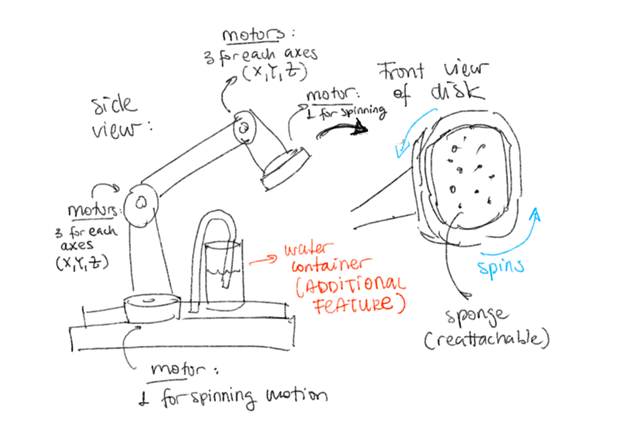
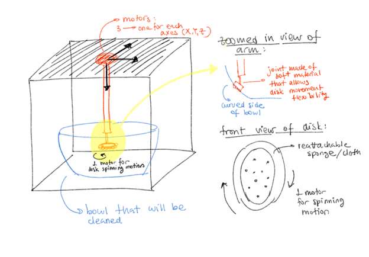
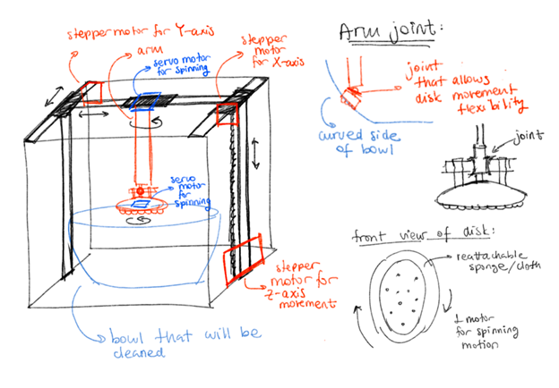

Featured Hardware Projects
Here are some of my recent hardware projects, showcasing my experience with different technologies and design approaches.
CubeScrub: A Cartesian Robot for Cleaning Flat Surfaces
CubeScrub is a Cartesian robot designed to move along three axes (X, Y, Z) to effectively clean flat surfaces. Below is a detailed overview of its development, from concept to implementation.
CubeScrub: Previous Work and Objectives
CubeScrub was inspired by existing Cartesian robot systems and automated cleaning devices. The goal was to design a modular, efficient, and user-friendly cleaning robot that could be intuitively controlled while maintaining stability and flexibility for various cleaning tasks.
CubeScrub: Design Iterations
Throughout the development of CubeScrub, we explored three main design iterations. Each brought unique insights and challenges. Below is a summary of the designs, their advantages, and their limitations. After careful evaluation, we decided to proceed with Iteration 2 due to its balance of simplicity, stability, and functionality.
CubeScrub: Iteration 1
| Advantages | Disadvantages |
|---|---|
| Highly flexible in 3D movement. | Unnecessarily complex, requiring more power. |
| Visually intuitive, resembling a human arm. | Unintuitive for manual control by children due to multiple moving parts. |
CubeScrub: Iteration 2 ✔
| Advantages | Disadvantages |
|---|---|
| Lightweight robotic arm eliminates concerns about structural stability. | Requires two motors on the robotic arm: one for spinning and another for extending. |
| Simple and intuitive to build and control. | Needs a flexible mechanism to allow Z-axis movement, risking structural instability. |
CubeScrub: Iteration 3
| Advantages | Disadvantages |
|---|---|
| Removes motor weight from the robotic arm, distributing it onto the wall tracks. | Significant weight on Z-axis tracks due to X and Y axes relying on them. |
| More stable and conventional design. | Complicated build and maintenance due to track dependencies. |
CubeScrub: Functional Units
Below is a detailed breakdown of the functional units that make up the CubeScrub system. Each unit plays a critical role in the operation and performance of the robot.
| Component | Description |
|---|---|
| Cube | Base structure of the entire robot system. |
| X Axis Tracks | Facilitates robotic arm movement across the X-axis. |
| Y Axis Tracks | Facilitates robotic arm movement across the Y-axis. |
| Z Axis Tracks | Facilitates robotic arm movement across the Z-axis. |
| Robotic Arm | Arm that moves to perform cleaning functions. |
| Rotating Cleaning Disk | Rotating disk with detachable ends to ensure optimal scrubbing. |
| Joint | Joint to enable the arm to clean all types of surfaces. |
| Controller | Remotely controls arm movement and system operations. |
CubeScrub: Initial Design and Decision-Making
To gain a deeper understanding of our decision-making process and the detailed comparisons between various design iterations and functional units, refer to the document below. It provides an in-depth exploration of the trade-offs, constraints, and rationale that guided the final design choices.
✨ Exciting Announcement ✨
The final prototype of CubeScrub will be showcased on December 14 at The Ithaca Science Center!
Come see CubeScrub in action and learn more about its innovative design and development process.